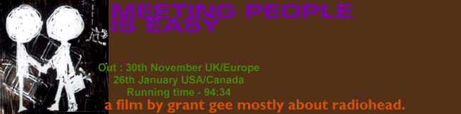

This is the end, then. OK Computer is finally wrapped up by this
release, Grant Gee following the band around for the last two
years, from the beginning to the very end of promoting the LP. Of
course if you have any kind of interest in Radiohead, it is clear
from the beginning that this is an essential purchase - you get
lots of live music, great behind-the-scenes footage and a
completely unprecedented insight into just what makes the band
tick. But that isn't by even half of it's appeal.
Firstly, don't expect another cheesy band documentary, with Thom sitting down relating hilarious anecdotes to the camera, showing the band enjoying a friendly cup of coffee, being perpetually happy with nice hair and always running into old friends and having a generally good laugh. In my mind, that is the inverse of what this film is about. The documentary really exists in the third person - a side-effect but definite advantage of having a director follow the band around. What you do see of the band is either on stage, in soundcheck wrestling with new material, or being constantly and repetitively grilled in interview. And be sure, that nothing is left out - there are a lot of places where a few cuts here and there would have made the whole thing seem better. And yes, the band do say some stupid things occasionally, and there are arguments, and most effectively, moments of complete boredom and silence.
However, and probably most importantly, Grant has created far more of an artistic statement with this video - he uses his sharp eye to highlight the 20th century life that we live in at the moment - witness the simple yet amazingly powerful scene of the late-night metro car speeding off into the black and the blurred headlights of the rain-soaked motorway overheard as the band play 'Exit Music' live. Indeed, the theme is curiously strong on transport and cities. Many views from the front of the band's tourbus ploughing down unnamed roads, the band terminally waiting in airports (including the quite subtly hilarious opening that is used for the film). Later on in the film, Grant takes the time out to provide an entire visual backdrop for the whole of 'Palo Alto'. The key thing is that the video is a actually as valid a piece of Radiohead's repertoire as OK Computer, even though most of the work was done by Grant - the reason why he is really the star of the video, which is easy to forget.
Of course, the focus is on Radiohead, and Radiohead you get. Right from the beginning, Colin wrestling with radio jingles, and Grant capturing the magical moment of the band walking on stage at Barcelona - their first gig for over two years - Thom's amazing vocal warm-up (you really have to hear it), and then all of them walking on stage, and the camera following them out front to break into 'Lucky', you see the band as they quite honestly are. It'll be interesting to see how many people's views will be changed by this video - it is always hard to separate a band from their music, and especially in the case of Radiohead, it may cause a few surprises.
But another one of the strengths of this film is what they show. As mentioned, a lot of it is shown through the band's continual interview harrassement, from humour - the French journalist asking Colin about Sparkleyhorse, Thom's story about meeting Mr. Klein, to pure horror - Jonny lying on a hotel bed trying to conduct an interview with an American journalist "And in the middle of the interview I was asked 'Does Thom Yorke really think that life sucks?'.", the one scene where Thom is posing for photographs in Japan and you see him constantly posing, hear the cameras clicking over and over again. Half way through, in a German interview Colin just says that basically he can't face to do another one, that he's really sorry, and that he's just tired - politely of course. Probably the most disturbing parts of the video involves the video for No Surprises - I won't spoil it, but it makes such an effective comment in just a minute or so.
At some point during the video, you will suddenly realise what it is like - and whether you have sympathy or not, that's up to you, but the feeling is there and conveyed in true reality.
The music is the third part of the video - and it there is tons of it. Grant has captured some top performances from the band - as the band opens with Lucky, right to the final performance of Nude in New York, closing the whole film explosively - he gets a great cross-section of shows (see list at the bottom of this review to see if your show is on there). From the lights-up Glastonbury '97 moment, the total and final destruction of Creep at Philadelphia, plus the precious first steps of the material soundchecked including the infamous 'Avengers' session where they try to piece together 'Big Boots', you're reminded just that whatever goes on behind it all, it's the music that is heard around the country, and this band are nothing short of the best.
It is so true that every copy of OK Computer sold should be packaged with this video - just to give the fans, the journalists and even the casual buyers an insight into what it is to like to be five slightly confused yet well-meaning pre-millenial celebrities.
-Max Kolombos
During the video, you can enjoy clips of live performances from :
22/5/97 - Lucky
28/6/97 - Creep
24/8/97 - Creep
26/8/97 - How to Disappear Completely (acoustic soundcheck)
29/8/97 - Karma Police (David Letterman)
3/9/97 - Airbag
12/10/97 - A Reminder (soundcheck), Airbag, Creep, Paranoid
Android
3/11/97 - Life in a Glass House (acoustic soundcheck), New song
(soundcheck), Exit Music
5/11/97 - Paranoid Android (soundcheck)
19/12/97 - Climbing up the Walls, Street Spirit
17/1/98 - Electioneering
18/1/98 - Pearly*
21/1/98 - New song (soundcheck)
24/1/98 - The Tourist
12/3/98 - Big Boots (in studio)
17/4/98 - Nude (soundcheck and performance)
?/?/? - Exit Music (soundcheck)